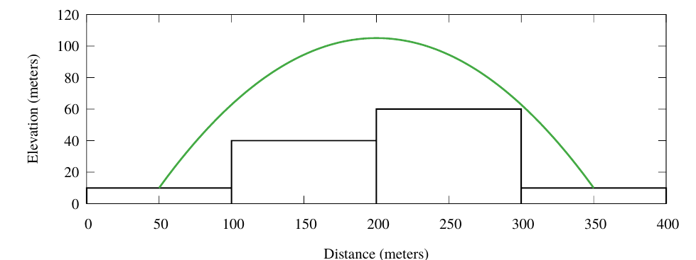

有一个 $d_x \times d_y$ 的正方形网格，每个单元格的大小为 $w \,\mathrm m \times w \,\mathrm m$。每个单元格 $\left( x, y \right)$ 中有一个底面和该单元格重合的长方体，它的高度为 $h_{x, y}$。
为了从 $\left( x_1, y_1 \right)$ 跳到 $\left( x_2, y_2 \right)$，你可以使用斜抛运动，如下图：
具体的，你的初速度 $v_0$ 保持不变，但可以改变抛射角 $\theta$ ($0 \leq \theta \leq \dfrac \pi 2$)。此时，你将获得一个水平的速度 $v_0 \cos \theta$ 和竖直向上的速度 $v_0 \sin \theta$。我们可以假设你在空中只受重力作用，且重力加速度为 $g = 9.80665 \,\mathrm{m/s^2}$，且起跳位置和落点位置必须恰好是两个长方体的顶面中心。这个跳跃可以成功进行，当且仅当你的轨迹不与任何一个长方体相交 (即使是顶点相交也不行)。
你现在需要确定，从某个长方体开始起跳，到每个长方体至少需要跳跃多少次，或说明某个长方体无论如何也不可能跳到。
第一行包含六个正整数 $d_x, d_y, w, v_0, l_x, l_y$ ($1 \leq d_x, d_y \leq 20; 1 \leq w, v_0 \leq 1000; 1 \leq l_x \leq d_x; 1 \leq l_y \leq d_y$)，分别表示网格的长和宽，每个长方体的底面边长，起跳初速度和起点坐标 (以方格为单位)。保证长度的单位均为 $\mathrm m$，速度的单位均为 $\mathrm{m/s}$。
接下来 $d_y$ 行，每行 $d_x$ 个非负整数 $h_{1, j}, h_{2, j}, \cdots, h_{d_x, j}$ ($0 \leq h_{i, j} \leq 1000$)，描述各建筑物的高度。
保证这些高度满足，将所有长方体的高度增加或减少不超过 $10^{-6} \,\mathrm m$，每个跳跃成功与否的结果不改变。
输出 $d_y$ 行，每行 $d_x$ 块，如果从起点可以到达该点，则该块为一个整数，表示最少的跳跃次数；如果无法到达，则该块为字符 X。
建立图论模型后可以发现是一个单源无权最短路问题，因此使用 bfs 解决。剩下的问题就是判断每两点之间是否右边 (即 $\left( x_1, y_1 \right)$ 能否跳到 $\left( x_2, y_2 \right)$)。
能发现我们能控制的量只有抛射角 $\theta$。因此我们先将运动正交分解，列出运动学方程：\begin{cases} x = v_0 \cos \theta \cdot t \\ y = v_0 \sin \theta \cdot t - \dfrac 12 g \cdot t^2 \end{cases}
上述两式消去 $t$，即得对于一个抛射角 $\theta$ 的轨迹方程：$$ y = \tan \theta \cdot x - \frac g {2 v_0^2 \cos^2 \theta} x^2 \tag 1 \label 1 $$
设 $\left( x_1, y_1 \right)$ 到 $\left( x_2, y_2 \right)$ 的水平距离为 $x_0$，竖直高度为 $y_0$。则对于 $\eqref 1$ 式，当 $x = x_0$ 时有 $y = y_0$，因此有 $$ y_0 = \tan \theta \cdot x_0 - \frac g {2 v_0^2 \cos^2 \theta} x_0^2 \tag 2 \label 2 $$
注意到 $\dfrac 1 {\cos^2 \theta} = \tan^2 \theta + 1$，因此 $\eqref 2$ 式可以看成关于 $\tan \theta$ 的一元二次方程：$$ g \cdot x_0^2 \cdot \tan^2 \theta - 2 v_0^2 \cdot x_0 \cdot \tan \theta + \left( g \cdot x_0^2 + 2 v_0^2 \cdot y \right) = 0 \tag 3 \label 3 $$
于是一个必要条件是 $\Delta_{\eqref 3} \geq 0$，即 $$ \left( v_0^2 \cdot x_0 \right)^2 - g \cdot x_0^2 \cdot \left( g \cdot x_0^2 + 2 v_0^2 \cdot y \right) = x_0^2 \cdot \left( v_0^4 - 2 g y \cdot v_0^2 - 2 g x_0^2 \right) \geq 0 $$
记 $D = v_0^4 - 2 g y \cdot v_0^2 - 2 g x_0^2 \geq 0$，则 $\eqref 2$ 式的两个解分别为 $$ \tan \theta_{1, 2} = \frac {v_0^2 \pm \sqrt D} {g \cdot x_0} $$
可以发现有两个解。但是我们希望高度尽可能高，因此在终点相同的情况下自然就选择抛射角较大的那个解了 (因为两个对称轴平行的抛物线至多有两个交点)，即 $\theta = \arctan \dfrac {v_0^2 + \sqrt D} {g \cdot x_0}$。
将 $\theta$ 回代至 $\eqref 2$ 式，我们就得到了轨迹方程 $y = A x^2 + B x$。然后接下来就是验证会不会 "撞墙" 了。
由抛物线的凸性，我们只需要轨迹 (的投影) 经过的每条小方格的边，检验该时刻的高度是否比这条边两侧的长方体的高度的 $\max$ 大即可。我们成这样的边为 "墙"。
由于水平的 "墙" 和竖直的 "墙" 地位相等，因此下面只讨论竖直的 "墙"。
首先，若 $x_1 = x_2$，则显然不会撞竖直的 "墙"。
否则，它会在 $x_1, x_1 + 1, \cdots, x_2 - 1$ 时分别撞到它右边的墙。
和这道题类似，我们可以求出在对应横坐标时的纵坐标，然后就可以得到对应高度了。
当然如果你暴力枚举所有的长方体检验也是可以的，只是时间复杂度会多个 $n$ 而已。
总时间复杂度 $O \left( d_x^2 d_y^2 \left( d_x + d_y \right) \right)$ (或者说 $O \left( n^5 \right)$)。
#include <bits/stdc++.h>
using std::cin;
using std::cout;
const int N = 27, INF = 0x3f3f3f3f;
constexpr double g = 9.80665, two_g = 2. * g, eps = 1e-8;
#define lt(x, y) ((x) < (y) - eps)
#define gt(x, y) ((x) > (y) + eps)
#define le(x, y) ((x) <= (y) + eps)
#define ge(x, y) ((x) >= (y) - eps)
#define eq(x, y) (le(x, y) && ge(x, y))
#define dot(x, y, z) (((y) - (x)) * ((z) - (x)))
#define cross(x, y, z) (((y) - (x)) ^ ((z) - (x)))
int R, C, a, v0;
int h[N][N], d[N][N];
int que[N * N];
inline int max(const int x, const int y) {return x < y ? y : x;}
inline int sqr(int x) {return x * x;}
inline int floor(int a, int b) {
if (b < 0) a = -a, b = -b;
return (a < 0 ? a - b + 1 : a) / b;
}
inline int ceil(int a, int b) {
if (b < 0) a = -a, b = -b;
return (a < 0 ? a : a + b - 1) / b;
}
inline bool check(int r1, int c1, int r2, int c2) {
int X2 = (sqr(r2 - r1) + sqr(c2 - c1)) * a * a, I = h[r1][c1], Y = h[r2][c2] - I;
double delta = (long long)v0 * v0 * v0 * v0 - Y * v0 * v0 * two_g - X2 * (g * g);
if (delta < 0) return false;
double tan_theta = (v0 * v0 + sqrt(delta)) * (1. / g) / sqrt(X2), A = g / (2 * v0 * v0) * (tan_theta * tan_theta + 1), unit, x, y;
int i, m, p, r, c, dr, dc, r_min, r_max, c_min, c_max, U;
if (r1 != r2) {
dr = r2 - r1, dc = c2 - c1, p = dr >> 31 | 1, r = r1, m = abs(dr),
unit = .5 * a * hypot(dr, dc) / m, U = 2 * dr * c1 + dr + dc * p;
for (i = 0; i < m; ++i, r += p, U += 2 * dc * p) {
c_min = ceil(U, 2 * dr) - 1, c_max = floor(U, 2 * dr) + 1;
for (c = c_min; c < c_max; ++c) {
x = (2 * i + 1) * unit, y = (tan_theta - A * x) * x;
if (lt(y, max(h[r][c], h[r + p][c]) - I)) return false;
}
}
}
if (c1 != c2) {
dc = c2 - c1, dr = r2 - r1, p = dc >> 31 | 1, c = c1, m = abs(dc),
U = 2 * dc * r1 + dc + dr * p, unit = .5 * a * hypot(dr, dc) / m;
for (i = 0; i < m; ++i, c += p, U += 2 * dr * p) {
r_min = ceil(U, 2 * dc) - 1, r_max = floor(U, 2 * dc) + 1;
for (r = r_min; r < r_max; ++r) {
x = (2 * i + 1) * unit, y = (tan_theta - A * x) * x;
if (lt(y, max(h[r][c], h[r][c + p]) - I)) return false;
}
}
}
return true;
}
int main() {
int i, j, r, c, h, t = 0;
std::ios::sync_with_stdio(false), cin.tie(NULL);
cin >> C >> R >> a >> v0 >> c >> r;
for (i = 1; i <= R; ++i)
for (j = 1; j <= C; ++j) cin >> ::h[i][j];
memset(d, 63, sizeof d), d[r][c] = 0, que[t++] = r | c << 16;
for (h = 0; h < t; ++h) {
r = que[h] & 65535, c = que[h] >> 16;
for (i = 1; i <= R; ++i)
for (j = 1; j <= C; ++j)
if (d[i][j] >= INF && check(r, c, i, j))
d[i][j] = d[r][c] + 1, que[t++] = i | j << 16;
}
for (i = 1; i <= R; ++i)
for (j = 1; j <= C; ++j) {
if (d[i][j] >= INF) cout << 'X';
else cout << d[i][j];
cout << (j == C ? '\n' : ' ');
}
return 0;
}
坑1：注意运动的方向问题，$x$ 和 $y$ 的正负的未知的，因此循环时不要搞错方向了。
坑2：在计算整数的下取整和上取整时注意符号问题 (C++ 是向 $0$ 取整不是向下取整)。